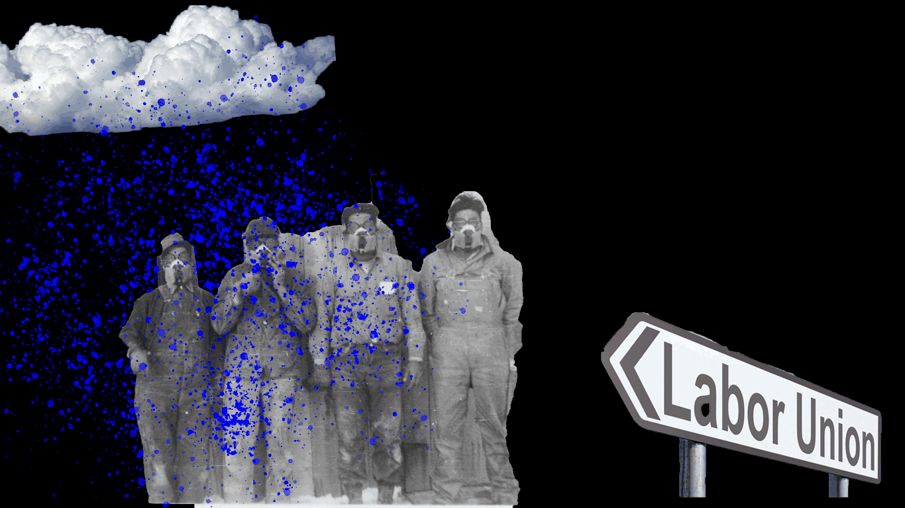

Despite the efforts of former labor unions' revolution, there are workers in countries all over the world who are still underpaid. The capitalist greed of employers has paved its way to exploit the people working under them in an unimaginable way. Are these unethical treatment of workers are due to the fact that they are less skilled than the skilled workers? Less skilled equals to less pay can be acceptable but, less skills doesn't give employers right to turn their employees into robots, making them do overwork and expecting them to live on pay below the living wage. As consumers we only think of the best we can get, not giving much thought on the medium of it.
Amaze on! is the largest online shopping platform on the internet. We buy stuffs from Amazon and are happy and contend once our products arrive. However, little do we know is the working conditions of people responsible for packaging, monitoring, scanning the product. Despite its fame Amazon has a long known reputation of unethical workforce. Jeff Bezos, the founder of Amazon is the world's richest man in the world right now. Jeff made approximately insane money for $230,000 per minute. Meanwhile, the median Amazon employee’s salary in 2017 was $28,446. There are ample of reports and complains by the Amazon's workers about their ill treatment in the workforce. There have been complains that the workers are assigned impossible targets, drivers are fined for early delievers etc. Amazon warehouse workers also are required to work in 100 degrees room temperature in the heat withou proper cooling system. Due to lack of job opportunities in some places, the employees cannot take much action on their treatment. Thus, Amazon seizes this opportunity of taking advantage of their workers' bad situation. Their hiring process includes temporary workers, where job appliers are requried to do certain amount of time before they can be positioned as permanent workers. After sometimes, they can reapply to jobs for temporary workers position. This scheme reduces the expense of permanent workers' demand for pay raise and health benefits. Amazon's ill treatment of employees demonstrates the power of capitalism in the world and also slavery in contemporary world.